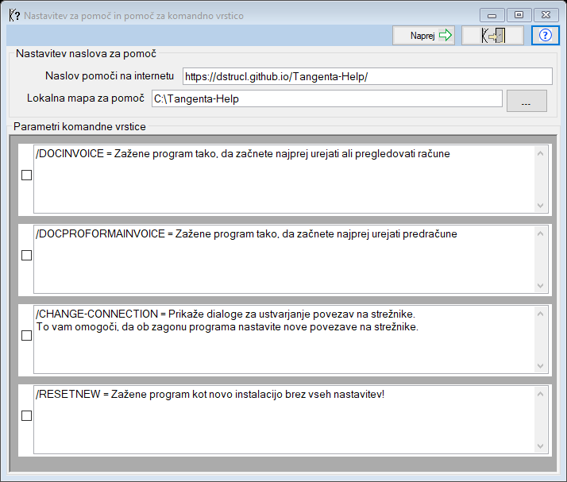

Pomoč za komandno vrstico in nastavitev povezave na pomoč
Dialog se prikaže kadar zaženemo program Tangenta.exe s parametrom
"/?"
V zgornjem delu lahko nastavimo povezavo (mapo na lokalno pomoč)
kot tudi internetni naslov pomoči.
Dialog prikaže še vse ostale možne parametre komandne vrstice,
vključno z zagonom programa Tangenta.exe z izbranim parametrom.

V kolikor damo odkljukamo komandni parameter, se bo program nadaljeval
natanko tako, kot če bi ga napisali v komandni vrstici in nato zagnali.
Parameter "/DOCINVOICE"
V kolikor program zaženemo v komandni vrstici s parametron "/DOCINVOICE"
se bo program avtomastko zagnal v načinu pisanja računov

Parameter "/DOCPROFORMAINVOICE"
V kolikor program zaženemo v komandni vrstici s parametron "/DOCINVOICE"
se bo program avtomastko zagnal v načinu pisanja računov

Parameter "/CHANGE-CONNECTION"
V kolikor program zaženemo v komandni vrstici s parametron "/CHANGE-CONNECTION"
se bo avtomatsko pojavil dialog za izbiro strežnika in nato podatkovne baze.

Parameter "/RESETNEW"
V kolikor program zaženemo v komandni vrstici s parametron "/RESETNEW"
bo program vse nastavitve nastavil tako kot so bile ob sami prvi namestitvi
programa, kar pomeni da boste morali še enkrat vnesti vse nastavitve.